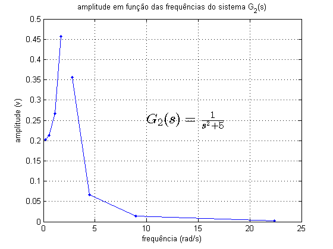

Sobre
- Autor: Jonas Vieira de Souza
- Data: 01/11/2018
- Objetivo: analisar respostas em frequência através do diagrama de Bode
Contents
Configurações iniciais
- desabilitar mensagens 'warning'
- limpar figuras, variáveis e console
warning('off');
close all;
clear;
clc;
1. Resposta a entrada senoidal
- resposta do sistema a entrada senoidal
- determinar ganho e fase
- obter a resposta em frequência através da função freqresp
- determinar a magnitude e fase através da função freqresp
m = 500;
b = 1000;
k = 15000;
s = tf('s');
Gsv = (m*s + b) / (m*s^2 + b*s + k)
t = 0:0.02:10;
w = 5;
u=sin(w*t);
x0 = 0;
figure(1)
[y, t] = lsim(Gsv, u, t, 0);
h = plot(t, u, t, y);
title('resposta do sistema G_1(s) a entrada senoidal com w = 5 rad/s')
xlabel('tempo (s)')
ylabel('amplitude (v)')
grid on;
legend('sinal de entrada', 'sinal de saída');
text(1,.7,'$G_1(s) = \frac{500s + 1000}{500s^{2} + 1000s + 25000}$','interpreter','latex','FontSize',18)
[u_value, u_idx] = max(u);
u_value;
u_t = t(u_idx);
[y_value, y_idx] = max(y);
y_value;
y_t = t(y_idx);
rel_ganho = y_value / u_value
Dt = u_t - y_t;
dif_fase = w*Dt
freqGsv = freqresp(Gsv, 5)
mag = abs(freqGsv)
fase = angle(freqGsv)
Gsv =
500 s + 1000
------------------------
500 s^2 + 1000 s + 15000
Continuous-time transfer function.
rel_ganho =
0.4822
dif_fase =
0.1000
freqGsv =
0.4800 + 0.0400i
mag =
0.4817
fase =
0.0831

2. Sistema de 2ª ordem sem amortecimento
- determinar wn
- obter a resposta a entrada senoidal em wn
- aplicar a função freqresp para wn
Gmm = 1/(s^2+5)
wn = sqrt(5)
t = 0:0.1:20;
u=sin(wn*t);
[y, t] = lsim(Gmm, u, t, 0);
figure(2)
h = plot(t, u, t, y);
title('resposta do sistema G_2(s) a entrada senoidal com wn = 2.2361 rad/s')
xlabel('tempo (s)')
ylabel('amplitude (v)')
grid on;
legend('sinal de entrada', 'sinal de saída');
text(2,3.5,'$G_2(s) = \frac{1}{s^{2} + 5}$','interpreter','latex','FontSize',18)
freqGmm = freqresp(Gmm, wn)
Gmm =
1
-------
s^2 + 5
Continuous-time transfer function.
wn =
2.2361
freqGmm =
Inf
3. Resposta a entrada senoidal em diferentes frequências
- obter a respota a entrada senoidal em diferentes frequências
- para Gmm, obter as respostas para: w=wn/2, w=wn, w=2wn, w=10wn
- para o vetor w = [ 0.1*wn, 0.25*wn, 0.5*wn, 2*wn, 4*wn, 10*wn ]
- obter a resposta a função freqresp para Gmm dado um vetor de wn's
- obter o vetor de magnitudes da função freqresp
- plotar o vetor de magnitudes da função freqresp
Gmm = 1/(s^2+5);
wn = sqrt(5);
vector_wn = [wn/2 2*wn 10*wn];
vector_wn_txt = {'wn/2' '2*wn' '10*wn'};
figure(3)
t = 0:0.01:5;
for i = 1:3
subplot(3,1,i);
u=sin(vector_wn(i)*t);
[y, t] = lsim(Gmm, u, t, 0);
plot(t, u, t, y);
hold on
txt1 = 'resposta do sistema G_2(s) a entrada senoidal com..';
txt2 = strcat( txt1, vector_wn_txt(i));
txt3 = strcat( txt2, ', w =..');
txt4 = strcat( txt3, num2str(vector_wn(i)) );
txt5 = strcat( txt4, ' rad/s' );
title(txt5)
xlabel('tempo (s)')
ylabel('amplitude (v)')
legend('sinal de entrada', 'sinal de saída');
grid on;
end
w = [0.1*wn 0.25*wn 0.5*wn wn*0.75 wn wn*1.25 2*wn 4*wn 10*wn];
freqGmm = freqresp(Gmm, w);
magGmm = abs(squeeze(freqGmm));
figure(4)
plot(w, magGmm, '.-');
grid on;
xlabel('frequência (rad/s)')
ylabel('amplitude (v)')
title('amplitude em função das frequências do sistema G_2(s)');
text(10,.25,'$G_2(s) = \frac{1}{s^{2} + 5}$','interpreter','latex','FontSize',18)

4. Diagrama de Bode
- plotar o diagrama de Bode do sistema Gmm
- obter o nível dc do sistema Gmm
- obter a primeira frequência em 3db
figure(5)
Gmm = 1/(s^2+5);
bode(Gmm)
grid on;
nivel_dc = dcgain(Gmm)
first_3db = bandwidth(Gmm)
title('diagrama de Bode do sistema G_2(s)');
text(0.2, 140,'$G_2(s) = \frac{1}{s^{2} + 5}$','interpreter','latex','FontSize',18)
nivel_dc =
0.2000
first_3db =
3.4731
5. Análise em função da varição de parâmetros
- observar a resposta em frequência para diferntes amortecimentos
- obter as curvas de magnitude e fase diferentes parametros
m = 1;
k = 5;
b = [0.1 0.5 0.8 1 2 4];
figure(6)
for i = 1:6
G3 = 1 / (m*s^2 + b(i)*s + k);
bodeplot(G3)
hold on
end
grid on;
b_leg = {'b=0.1' 'b=0.5' 'b=0.8' 'b=1' 'b=2' 'b=4'};
legend(b_leg);
text(0.03, -90,'$G_3(s) = \frac{1}{s^{2} + b.s + 5}$','interpreter','latex','FontSize',18)
title('diagrama de Bode do sistema G_3(s) variando b');
b = 0.6;
k = 5;
m = [2 3 4 6];
figure(7)
for i = 1:4
G4 = 1 / (m(i)*s^2 + b*s + k);
bodeplot(G4)
hold on
end
grid on;
m_leg = {'m=2' 'm=3' 'm=4' 'm=6'};
legend(m_leg);
text(0.15, -90,'$G_4(s) = \frac{1}{m.s^{2} + 0.6.s + 5}$','interpreter','latex','FontSize',18)
title('diagrama de Bode do sistema G_4(s) variando m');